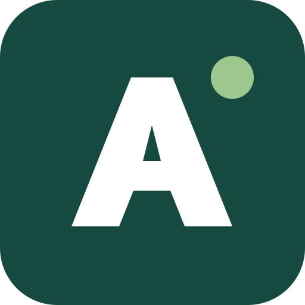

Websites institucionais
Sites com identidade, páginas de serviço, contactos e conteúdo organizado para tornar a decisão mais fácil.
CodeCraftStudio
A preparar algo bem construído
Desenhamos e desenvolvemos presença digital para negócios que querem comunicar com clareza, ser encontrados e converter interesse em contacto.
Começar uma conversaO ponto de partida
Uma presença digital não precisa de parecer futurista para parecer actual. Precisa de mensagem, estrutura, rapidez e detalhe bem resolvido.
O que fazemos
Do primeiro esboço ao lançamento, com uma pessoa responsável pelo processo — sem equipas invisíveis nem apresentações vazias.
Sites com identidade, páginas de serviço, contactos e conteúdo organizado para tornar a decisão mais fácil.
Experiências digitais pensadas para compra, reserva, gestão ou acesso a informação — sempre com o utilizador no centro.
Sistemas visuais e fluxos claros que tornam o produto consistente em todos os ecrãs.
Arquitetura de conteúdo, entidades, dados estruturados e performance para pesquisa, respostas de IA e descoberta orgânica.
Trabalho seleccionado
Websites e produtos digitais resolvidos para marcas, serviços e profissionais distintos.
BDN
Como trabalhamos
Começamos pelo negócio, pelo público e pelo objectivo. Um site sem um problema claro para resolver é só decoração.
Definimos conteúdo, desenhamos as páginas e desenvolvemos uma versão rápida, acessível e fácil de manter.
Validamos em dispositivos reais, ligamos os fundamentos de SEO e entregamos o site pronto a representar a marca.
Perguntas frequentes
Websites institucionais, lojas e plataformas digitais, design de interface e bases técnicas de SEO e performance.
Estamos sediados em Esposende e trabalhamos em Portugal e remotamente em projetos internacionais.
Objetivo do negócio, público, conteúdo disponível, prazo e o problema que o website deve resolver. O resto é organizado no processo.
A CodeCraft foca-se na presença digital. Para redes sociais, conteúdo, tráfego pago e SEO contínuo, a AfterNow complementa o trabalho.
Ecossistema CodeCraft
Uma presença digital precisa de continuar a trabalhar depois de ser lançada.


A AfterNow é a agência de marketing digital do mesmo ecossistema da CodeCraft Studio. Enquanto a CodeCraft desenha e constrói a presença digital, a AfterNow trabalha a estratégia que a mantém relevante depois do lançamento.
Novo projecto
Conte-nos o que está a tentar construir, onde está bloqueado e o prazo que tem em mente. Uma mensagem com contexto recebe uma resposta mais útil.
geral@codecraftstudio.site ↗